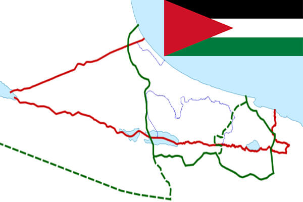

To`liq nomi : Falastin davlati
Region: Osiyo
Qonunchilik shakli: Parlamentar Respublika
Poytaxti: Ramallax
Maydoni: 6020 km²
Aholisi: 4 550 368
Aholi zichligi: 755.87/km²
Rasmiy tili: Arab tili
Dini: Islom
Pul birligi: Yangi shekel
Telefon prefiksi: +970
Internet domen: .ps